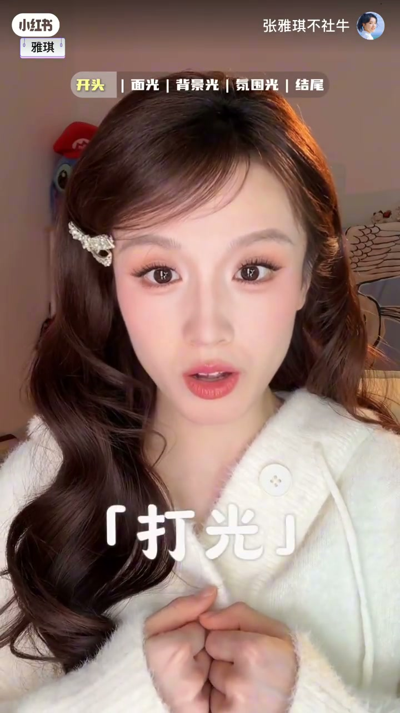
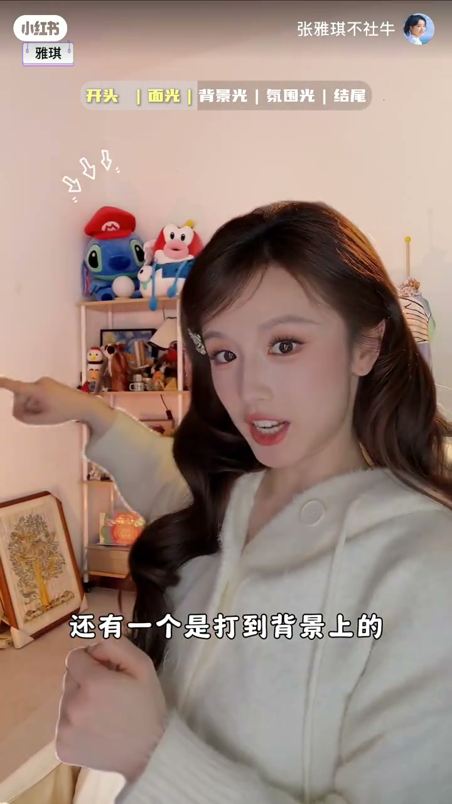
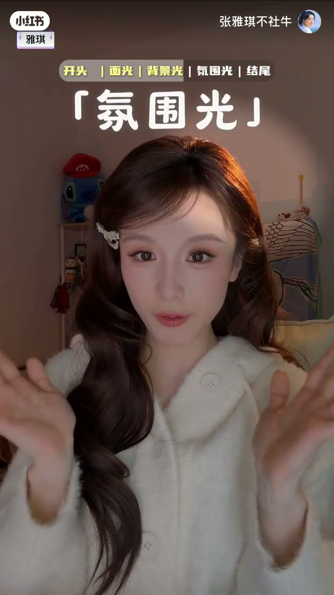

内容要点
一支 92 秒的视频打光秘籍：博主把打光拆成三种光——面光让脸立体白净、背景光让画面温暖有氛围、发丝光让人更精致，分别演示开与不开的对比。
知识结构
[00:00→00:23]
开场对比
有面光 vs 没面光、开了 vs 没开，打光前后画质差距明显。
[00:23→00:48]
面光：两个主光源 + 下巴灯
左前右前两个大主光源让脸立体，桌面反光板从下反射消法令纹泪沟。
[00:48→01:07]
背景光
西洋灯 + 暖色调台灯打到背景，画面更温暖更有氛围感。
[01:07→01:32]
发丝氛围光
高射灯从上往下打头顶，发丝有一束光整个人更精致。
总结
视频打光三件套：正面两个主光打立体感 + 下巴灯反光板消法令纹泪沟 + 背景光暖色调 + 头顶发丝光，冷光面光显白、暖光氛围显温柔。
开场对比：打光前后
博主先演示有面光 vs 没面光的差别：以前不打光画面糊、脸上有纹纹露露，学会打光后画面自然通透高级。
面光：双主光 + 下巴灯
面前有三个光源：左前方和右前方两个大主光源让脸更有立体感，桌面反光板从下反射光，消掉法令纹和泪沟。面光打冷光显皮肤白净。

背景光：温暖氛围
第二个是背景光，用西洋灯加暖色调台灯打到背景上。有背景光 vs 没背景光对比明显，打了之后整个画面更温暖、更有氛围感。

发丝氛围光：精致感
第三个是发丝氛围光，用一个很高的射灯调节亮度和色温，从上往下打到脑袋顶上，发丝有一束光后整个人精致不少。背景氛围光和发丝光都用暖光，显得温柔。
